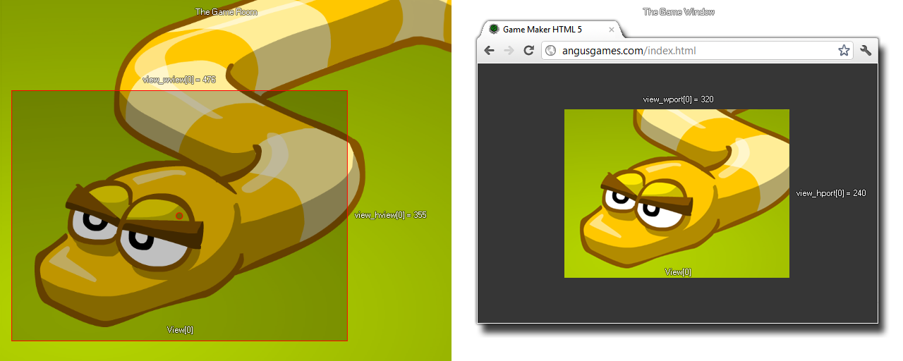

view_wview[0...7]
返回： 实数
这个变量可以用来获取或设置房间视野的宽度。改变这个值，可以更改通过视野能看见的房间的范围，但是记住这 不会 改变 视口，所以设置了一个比视口宽度更大的值将导致视野缩小以适应视口，而比视口更小时将放大以适应视口。 下面的图像说明这一点:

var ratio;
ratio = view_hport[0] / view_wport[0];
view_wview[0] -= sc_amt;
view_hview[0] -= sc_amt * ratio;
上述代码将基于视口宽高比，缩放视野宽高。